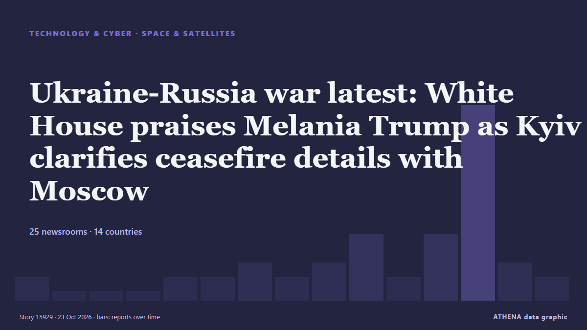

Ukraine-Russia war latest: White House praises Melania Trump as Kyiv clarifies ceasefire details with Moscow

The localised ceasefire for the Russian-occupied city will reportedly begin on October 29. von The Independent
Unabhängig gemeldet von 25 Medien in 14 Ländern seit dem 19. Okt., zuerst von Fortune; die Berichterstattung ist auf dem Höhepunkt. ATHENA stuft das Risiko als mäßig ein (3.3/10), vor allem wegen der Schwere des beschriebenen Schadens und seiner geografischen und sektoralen Reichweite. Die Konfidenz liegt bei 89 % (hoch): 25 Medien bestätigen es unabhängig, bei einer mittleren Verlässlichkeit der Quellen von 78 %. Wer berichtete: 7 Medien in Vereinigte Staaten · United States, 6 Medien in Ukraine, 3 Medien in Russland · Russia. Die Berichterstattung lief von 19. Okt. bis 23. Okt., über 85 Stunden.
Warum es wichtig ist: Russlands Großangriff auf die Ukraine begann im Februar 2022. Dieser Tracker verfolgt die Kämpfe, Angriffe auf Infrastruktur und die Diplomatie rund um den Krieg, wie Redaktionen weltweit darüber berichten.
Was sich geändert hat: 21 neue Berichte von 19 Redaktionen in den 24 Stunden bis 23. Okt..
Schlagzeilen werden auf Englisch angezeigt, wie veröffentlicht.
Auf einen Blick
Ausgewählt, bewertet und geschrieben nach der veröffentlichten Methodik von ATHENA. Kein Redakteur greift in einzelne Ereignisse ein. So entsteht ATHENA ›
| 19 Oct 18:50 UTC | 1 |
|---|---|
| 20 Oct 00:50 UTC | 0 |
| 20 Oct 06:50 UTC | 0 |
| 20 Oct 12:50 UTC | 0 |
| 20 Oct 18:50 UTC | 1 |
| 21 Oct 00:50 UTC | 1 |
| 21 Oct 06:50 UTC | 2 |
| 21 Oct 12:50 UTC | 1 |
| 21 Oct 18:50 UTC | 2 |
| 22 Oct 00:50 UTC | 4 |
| 22 Oct 06:50 UTC | 1 |
| 22 Oct 12:50 UTC | 4 |
| 22 Oct 18:50 UTC | 13 |
| 23 Oct 00:50 UTC | 2 |
| 23 Oct 06:50 UTC | 1 |
| 19 Oct 19:16 UTC | 0.0 |
|---|---|
| 22 Oct 07:04 UTC | 3.3 |
| 22 Oct 07:05 UTC | 2.7 |
| 22 Oct 07:06 UTC | 3.3 |
| 22 Oct 19:55 UTC | 3.8 |
| 23 Oct 06:41 UTC | 3.1 |
| 23 Oct 08:00 UTC | 3.3 |
Warum diese Zahlen
Bedeutung
Risiko
Konfidenz
Die Berichterstattung – wer berichtete, und wann
Schlagzeile wie veröffentlicht · öffnet das Original- Fortune · Vereinigte Staaten · United StatesUkraine’s drones lose their Starlink link above 100 mph. Musk, Rubio and Trump all say it wasn’t them
- Meduza (English) · Russland · RussiaDid Trump know Musk was about to restrict Ukraine’s military Starlink service? WSJ reports they discussed the decision afterward. Some sources say they also spoke beforehand.
- Kyiv Post · UkraineMusk Ordered Starlink Slowdown That Disrupted Ukrainian Drone Operations – WSJ
- Novinite · Bulgarien · BulgariaMusk Capped Ukraine’s Starlink Speeds, According to Report
- Kyiv Post · UkraineRubio: Musk Sets Ukraine’s Starlink Access, Not White House
- CBS News (World) · Vereinigte Staaten · United StatesMusk chose to restrict Ukraine's access to SpaceX network, sources say
- CNBC World · Vereinigte Staaten · United StatesTrump denies ordering Starlink slowdown in Ukraine, says he doesn't know who did
- Arab News · Saudi-Arabien · Saudi ArabiaStarlink access in Ukraine a decision for Musk, not White House, Rubio says
- Times of India · Indien · India‘I will come for them’: Elon Musk threatens Democrats over plans to probe his empire
- CBS News (World) · Vereinigte Staaten · United StatesElon Musk's Starlink and Starshield, and what they mean to Ukraine
- RFE/RL (English) · INTTrump Says Musk Has Lifted Starlink Restrictions On Ukraine While Kyiv Reports Ongoing Issues
- Al Jazeera English · Katar · QatarUkraine’s access to Starlink a decision for Elon Musk, Rubio says
- The Hill · Vereinigte Staaten · United StatesRubio, Hegseth point fingers at Musk in Starlink slowdown
- Kyiv Post · UkraineVance: Starlink Use Depends on US Policy Toward Kyiv, Moscow – Not Musk
- SABC News · Südafrika · South AfricaTrump asks Musk to lift Ukraine Starlink restrictions: WSJ reports
- Meduza (English) · Russland · RussiaTrump called Elon Musk to ask him to lift restrictions on Ukraine’s military-grade Starlink service, WSJ reports
- Anadolu Agency (English) · Türkei · TurkeyTrump asks Musk to lift Starlink speed cap in Ukraine: Report
- The Straits Times · Singapur · SingaporeTrump says Musk restored Ukraine’s Starlink access, declines to say if they spoke
- The Moscow Times · Russland · RussiaTrump Says Musk Restored Ukraine's Starlink Access, Declines to Say if They Spoke
- Arab News · Saudi-Arabien · Saudi ArabiaTrump asks Musk to lift Ukraine Starlink restrictions, WSJ reports
- CNBC World · Vereinigte Staaten · United StatesMusk's clash with Ukraine accelerates demand for Starlink alternatives. Few exist
- CNBC World · Vereinigte Staaten · United StatesTrump asked Musk to lift Starlink slowdown, WSJ reports
- NDTV · Indien · IndiaTrump Asks Elon Musk To Lift Ukraine Starlink Restrictions: Reports
- Kyiv Independent · UkraineKyiv denies reports that Trump, Musk have restored Starlink speeds in Ukraine
- Ukrinform (English) · UkraineTrump asked Musk to lift Starlink restrictions in Ukraine – WSJ
- APA (English) · Aserbaidschan · AzerbaijanTrump asked Musk to lift Ukraine's Starlink limitations
- Ukrainska Pravda (English) · UkraineTrump confirms Elon Musk has lifted speed restrictions on Starlink in Ukraine
- APA (English) · Aserbaidschan · AzerbaijanTrump refuses to confirm call to Musk on Kyiv Starlink access
- BBC News · Vereinigtes Königreich · United KingdomUkraine says Starlink still restricted after Trump says limits lifted
- RTÉ News · Irland · IrelandTrilateral talks on war to be held in November - Zelensky
- Al Jazeera English · Katar · QatarTrump says Musk restored Ukraine’s Starlink access amid Russia war
- The Independent · Vereinigtes Königreich · United KingdomUkraine-Russia war latest: White House praises Melania Trump as Kyiv clarifies ceasefire details with Moscow
- The Guardian · Vereinigtes Königreich · United KingdomMelania Trump has helped broker ceasefire in Russian-occupied Ukrainian town, says White House – as it happened